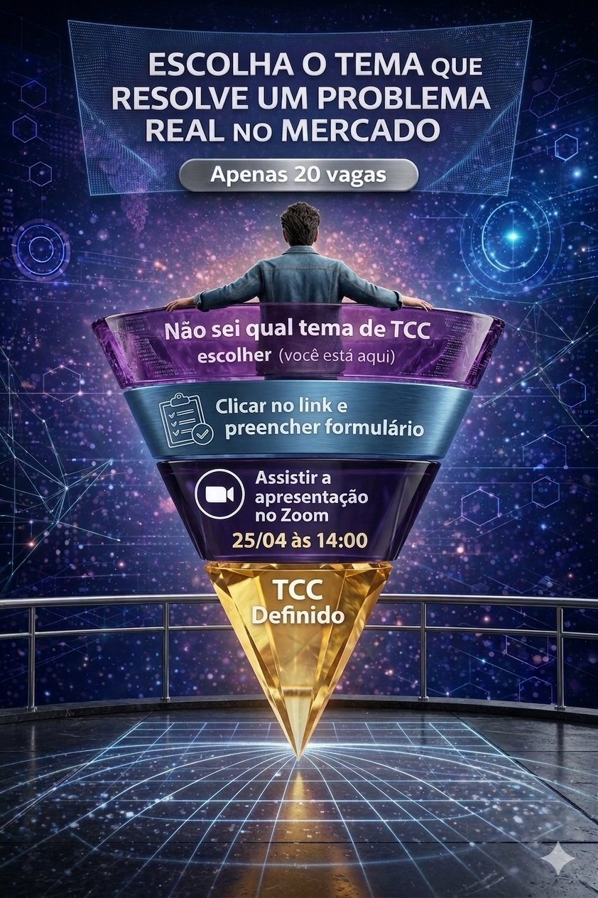

Descubra como escolher um tema alinhado ao mercado.
Apresentação online ao vivo
Todo trabalhador do conhecimento precisa saber pesquisar e aprender com rapidez e eficiência.
Use a monografia para se especializar em um tema com demanda real no mercado.
Inscreva-se para definir seu tema
25 de abril de 2026, das 11h às 12h, online
Use pesquisa aplicada para tomar decisões melhores.
Transforme o TCC em especialização, portfólio e tração.

Por que
Por que seu tema de monografia importa
Seu TCC pode deixar de ser apenas uma obrigação acadêmica e virar um laboratório de especialização, portfólio e oportunidade de mercado.
Aprendizado util
Escolher um problema real acelera um tipo de aprendizado que você consegue aplicar na carreira com mais rapidez.
Tração profissional
Um bom tema pode abrir portas para uma nova especialização, um posicionamento mais forte ou até o início de um negócio.
Repertório raro
Pesquisa aplicada gera critério, referências e clareza para priorizar oportunidades melhores.
Exemplo citado pela Exame
Cymco
A Cymco, empresa de alimentos do Paraná, foi estruturada a partir de um TCC e virou um negócio relevante no setor.
Ver referenciaExemplo citado pelo Brazil Journal
Takeat
A Takeat nasceu de um projeto de TCC focado em operação e digitalização no food service e evoluiu para startup.
Ver referenciaO que
O que será abordado
Uma apresentação objetiva para quem quer usar o TCC como caminho de especialização e alavanca para oportunidades reais.
Vamos abordar
- Processo enxuto para definição de tema de monografia.
- Como pensar um TCC para resolver um problema real no mercado e impulsionar carreira ou negócio.
- Conceitos e métodos para mapear e priorizar oportunidades, como JTBD, entrevistas e Lean Canvas.
- Como realizar pesquisa, coletar referências e tomar notas com critério.
Não vamos abordar
- Como usar AI para fazer o TCC.
- Ideias prontas de TCC para você simplesmente copiar.
Formulário
Reserve sua vaga
Preencha o Microsoft Forms abaixo. Depois disso, clique no botão de confirmação para baixar o convite da apresentação no seu calendário.